目录
- Motivation Analogy to Psychology Computation as a Resource Latent Variable Modeling
- Thinking in Tokens Branching and Editing Parallel Sampling Sequential Revision RL for Better Reasoning External Tool Use Thinking Faithfully Does the Model Tell What it Thinks Faithfully Optimization Pressure on CoT: Good or Bad?
- Thinking in Continuous Space Recurrent Architecture Thinking Tokens
- Thinking as Latent Variables Expectation-Maximization Iterative Learning
- Scaling Laws for Thinking Time
- What’s for Future
- Citation
- References
特别感谢 John Schulman 对本文提供了大量极具价值的反馈和直接修改。
测试时计算（Graves et al. 2016，Ling et al. 2017，Cobbe et al. 2021）和思维链（Chain-of-Thought, CoT）（Wei et al. 2022，Nye et al. 2021）显著提升了模型性能，同时也引发了许多研究问题。本文旨在回顾如何有效利用测试时计算（即“思考时间”）的最新进展，以及它为何有效。
动机
让模型能够思考更长时间，可以从几个不同角度来解释其合理性。
心理学类比
其核心思想与人类的思考方式紧密相关。我们人类无法立即回答“12345 乘以 56789 等于多少？”。面对复杂问题，自然会花时间思考和分析后再得出结果。在《思考，快与慢》（Kahneman, 2013）一书中，Daniel Kahneman 通过双过程理论的视角，将人类的思考分为两种模式：
- 快思考（系统 1）运行迅速且自动，依赖直觉和情感，几乎不费力。
- 慢思考（系统 2）需要刻意的、逻辑性的思考以及大量认知努力。这种模式会消耗更多心理能量，并要求主动投入。
由于系统 1 思考速度快且轻松，它往往成为主要决策驱动因素，但代价是准确性和逻辑性。它自然依赖大脑的心理捷径（即启发式），容易导致错误和偏差。通过有意识地放慢速度、多花时间反思、改进和分析，我们就能启动系统 2 思考，从而挑战本能并做出更理性的选择。
计算作为一种资源
深度学习的一种观点认为，神经网络可以由前向传播时可访问的计算量和存储量来刻画。如果我们用梯度下降来优化它们解决问题，优化过程会自行找出如何使用这些资源——它们会将这些资源组织成用于计算和信息存储的电路。从这个视角看，如果我们设计一种架构或系统，能在测试时进行更多计算，并训练它有效利用这一资源，模型就会表现得更好。
在 Transformer 模型中，模型为每个生成的 token 所做的计算量（FLOPs）大致是参数量的 2 倍。对于稀疏模型如专家混合（MoE），每次前向传播只使用部分参数，因此计算量 = 2 × 参数量 / 稀疏度，其中稀疏度指激活的专家比例。
另一方面，CoT 能让模型在生成每个答案 token 时执行远多得多的 FLOPs。事实上，CoT 有一个很好的特性：它允许模型根据问题的难度使用可变的计算量。
隐变量建模
机器学习中的一个经典思想是定义一个包含隐变量（latent variable）z 和可见变量y 的概率模型，其中y 是提供给学习算法的。对隐变量所有可能取值进行边缘化（求和），我们就能对可见变量表达一个丰富的分布P(y) = \sum_{z \sim P(z)} P(y \mid z)。例如，我们可以对数学问题及其解答建模：令x 表示问题陈述，y 为真实答案或证明，z 为引导出该证明的自由形式思考过程。需要优化的边缘概率分布为P(y \mid x) = \sum_{z \sim p(z\mid x)} P(y \mid x, z)。
隐变量视角对于理解那些收集多个并行 CoT 或在 CoT 上进行搜索的方法特别有用——这些算法可以看作是从后验P(z \mid x, y) 中采样。这一视角还表明，使用对数损失\log P(y \mid x) 作为目标函数非常有益，因为对数损失在预训练中已被证明极为有效。
用 Token 进行思考
在生成简短答案之前先生成中间步骤的策略，尤其针对数学问题，由Ling et al. 2017率先探索，他们提出了AQUA-RAT数据集。随后Cobbe et al. 2021进一步扩展，推出了Grade School Math (GSM)数据集。Cobbe 等使用人类编写的解答进行监督学习来训练生成器，并训练验证器来判断候选解答的正确性，之后可在这些解答上进行搜索。Nye et al. (2021) 将中间思考 token 作为“草稿纸”进行实验，而Wei et al. (2022) 则创造了至今通用的术语——思维链（Chain-of-Thought, CoT）。
早期改进 CoT 推理的工作包括：在人类编写的推理轨迹上进行监督学习，或使用经过答案正确性过滤的模型生成轨迹，后者可视为一种初级的强化学习（RL）。另一些工作发现，通过适当的提示（prompt），可以显著提升指令微调模型的数学能力，例如使用“一步一步思考”（Kojima et al. 2022），或使用更复杂的提示让模型先反思相关知识（Yasunaga et al. 2023）。
后续工作发现，通过在包含可自动验证答案的数据集上进行强化学习，CoT 推理能力可以得到显著提升，例如带有简短答案的 STEM 问题，或可用单元测试检查的编程任务（Zelikman et al. 2022，Wang et al. 2023，Liu et al. 2023）。这一方法随着 OpenAI 发布 o1-preview、o3 以及 DeepSeek 的 R1 技术报告（DeepSeek-AI, 2025）而备受关注，这些工作表明，一个简单的策略——使用策略梯度算法——就能带来强大的性能。
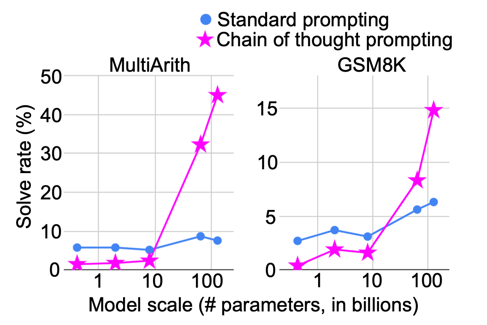
分支与编辑
测试时计算的核心意图是在测试时自适应地修改模型的输出分布。利用测试时资源进行解码以选择更好的样本，从而将模型的预测推向更理想分布的方式多种多样。改进解码过程的两种主要方法是并行采样和顺序修订。
- 并行采样同时生成多个输出，同时可在每一步提供过程奖励信号，或在结束时使用验证器判断质量。它是目前最广泛采用的提升测试时性能的解码方法，例如 best-of-N 或束搜索。当没有真实答案时，Self-Consistency（Wang et al. 2023）常被用来在多个 CoT 生成结果中通过多数投票选择答案。
- 顺序修订则根据前一步的输出迭代地调整模型的响应，要求模型有意识地反思已有回答并纠正错误。修订过程可能需要依赖微调过的模型，因为单纯依赖模型内在的自我纠正能力而没有外部反馈，往往无法带来改进（Kamoi et al. 2024，Huang et al. 2024）。
并行采样简单、直观且易于实现，但受限于模型能否“一步到位”得出正确答案。顺序修订明确要求模型反思错误，但速度较慢，实现时需要额外小心，因为存在将正确预测改错或引入其他幻觉的风险。这两种方法可以结合使用。Snell et al. (2024) 发现，较简单的问题更受益于纯顺序的测试时计算，而较难的问题通常在顺序与并行计算的最佳比例下表现最佳。
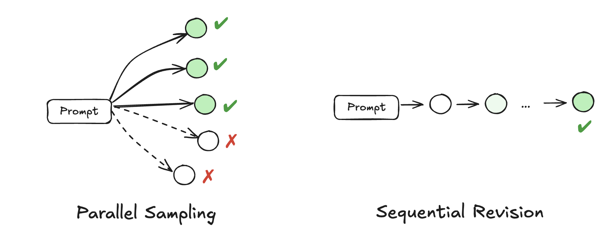
并行采样
给定一个生成模型和一个可用于对完整或部分样本打分的评分函数，我们可以使用多种搜索算法来找到高分样本。Best-of-N 是最简单的算法：只需收集N 个独立样本，然后根据某个评分函数选出排名最高的样本。束搜索（Beam Search）是一种更复杂的搜索算法，它使搜索过程更具适应性，将更多采样计算分配到解空间中更有前景的部分。
束搜索维护一组有前景的部分序列，在扩展它们和剪枝较差序列之间交替进行。作为选择机制，我们可以使用过程奖励模型（Process Reward Model, PRM；Lightman et al. 2023）来引导束搜索候选的选择。Xie et al. (2023) 使用 LLM 以多选题形式评估自己生成的推理步骤正确的可能性，发现按步自我评估能在束搜索解码中减少多步推理的累积错误。此外，在采样过程中退火温度有助于减轻累积的随机性。Xie 等人的这些实验在 Codex 模型上使 few-shot GSM8k、AQuA 和 StrategyQA 基准提升了 5-6%。Reward Balanced Search（简称“REBASE”；Wu et al. 2025）单独训练了一个过程奖励模型（PRM），根据 softmax 归一化后的奖励分数来决定束搜索中每个深度上每个节点应当扩展多少。Jiang et al. (2024) 训练了一个名为“RATIONALYST”的 PRM，用于在大量无标签数据上生成的合成推理依据上进行束搜索引导。好的推理依据通过比较在上下文中包含与不包含该依据时，真实答案 token 的负对数概率是否降低超过阈值来筛选。在推理时，RATIONALYST 通过帮助估计下一个推理步骤的对数概率（“隐式”）或直接生成下一个推理步骤作为提示的一部分（“显式”），为 CoT 生成器提供过程监督。
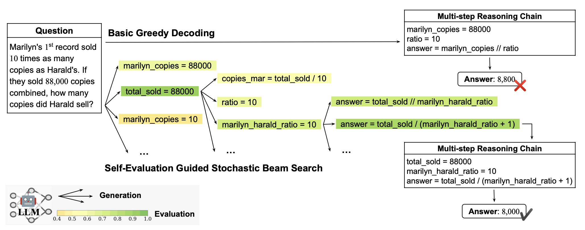
有趣的是，无需明确的 zero-shot 或 few-shot 提示，也能触发涌现的思维链推理路径。Wang & Zhou (2024) 发现，如果我们在首次采样 token 时进行分支，保留置信度最高的前k 个 token（置信度以采样时 top-1 与 top-2 候选的差异衡量），然后对这k 条采样路径继续使用贪心解码，许多序列会自然地包含 CoT。尤其是当 CoT 出现在上下文中时，它会让最终答案的解码变得更加自信。为了计算最终答案的置信度，需要通过任务特定的启发式（例如数学题的最后一个数值）或进一步提示模型“所以答案是”来识别答案跨度。只在第一个 token 进行分支的设计选择基于以下观察：早期分支能显著增加潜在路径的多样性，而后续 token 受先前序列的影响很大。
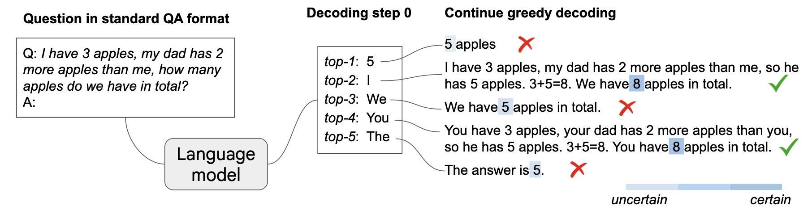
顺序修订
如果模型能够反思并纠正过去回答中的错误，我们会期望它产生一个质量逐步提升的迭代修订序列。然而，这种自我纠正能力在大型语言模型中并非天然存在，也无法开箱即用，原因包括多种失败模式，例如：（1）幻觉，包括将正确回答改成错误的；（2）行为坍缩为不纠正行为，例如对首次错误回答只做微小或不做修改；或（3）无法泛化到测试时的分布偏移。Huang et al. (2024) 的实验表明，简单地应用自我纠正会导致性能下降，必须依赖外部反馈才能让模型自我改进。这些反馈可以基于匹配真实答案、启发式和任务特定指标、编程题的单元测试结果（Shinn et al. 2023）、更强的模型（Zhang et al. 2024），以及人类反馈（Liu et al. 2023）。
自我纠正学习（Welleck et al. 2023）的目标是在固定生成器模型P_0(y_0 \mid x) 的情况下训练一个纠正器模型P_\theta(y \mid y_0, x)。生成器模型保持通用，而纠正器模型可以是任务特定的，仅在初始模型响应和额外反馈（例如一句话、编译器跟踪、单元测试结果；也可可选）的基础上生成：
- Self-correction learning first generates first generates multiple outputs per prompt in the data pool;
- then create value-improving pairs by pairing two outputs for the same prompt together if one has a higher value than the other, (prompt x, hypothesis y, correction y’).
- These pairs are selected proportional to is improvement in value, v(y’) - v(y), and similarity between two outputs, \text{Similarity}(y, y’) to train the corrector model.
- To encourage exploration, the corrector provides new generations into the data pool as well. At the inference time, the corrector can be used iteratively to create a correction trajectory of sequential revision.
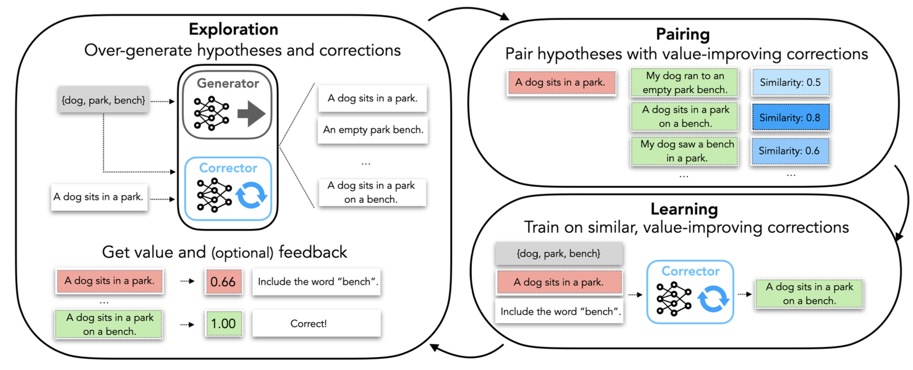
递归检查（Qu et al. 2024）也旨在训练更好的纠正器模型，但使用单个模型同时完成生成和自我纠正。
SCoRe（通过强化学习进行自我纠正；Kumar et al. 2024）是一种多轮 RL 方法，通过让模型在第二次尝试时产生比第一次更好的答案来鼓励自我纠正。它包含两个训练阶段：第一阶段仅最大化第二次尝试的准确率，同时仅对第一次尝试施加 KL 惩罚，以避免第一次回答偏离基础模型行为过大；第二阶段同时优化第一次和第二次尝试产生的答案的准确率。理想情况下我们希望两次尝试的表现都更好，但加入第一阶段可以防止模型在第一次回答上只做微小或不做修改的行为坍缩，第二阶段则进一步提升效果。
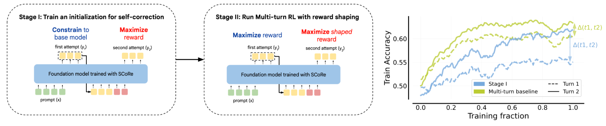
通过 RL 提升推理能力
近年来，使用强化学习提升语言模型推理能力取得了大量成功。其做法是收集一系列带有真实答案的问题（通常是易于验证答案的 STEM 问题和谜题），并在模型得出正确答案时给予奖励。该领域的近期热潮源于 OpenAI o 系列模型的强大表现，以及随后 DeepSeek 发布的模型和技术报告。
DeepSeek-R1（DeepSeek-AI, 2025）是一个开源 LLM，旨在擅长需要高级推理能力的任务，如数学、编程和逻辑问题求解。他们进行了两轮 SFT-RL 训练，使 R1 在推理和非推理任务上都表现出色。
- Cold-start SFT is to fine-tune the DeepSeek-V3-Base base model on a collection of thousands of cold-start data. Without this step, the model has issues of poor readability and language mixing.
- Reasoning-oriented RL trains a reasoning model on reasoning-only prompts with two types of rule-based rewards: Format rewards: The model should wrap CoTs by <thinking> ... </thinking> tokens. Accuracy rewards: Whether the final answers are correct. The answer for math problems needs to be present in a specific format (e.g. in a box) to be verified reliably. For coding problems, a compiler is used to evaluate whether test cases pass.
- Rejection-sampling + non-reasoning SFT utilizes new SFT data created by rejection sampling on the RL checkpoint of step 2, combined with non-reasoning supervised data from DeepSeek-V3 in domains like writing, factual QA, and self-cognition, to retrain DeepSeek-V3-Base. Filter out CoTs with mixed languages, long paragraphs, and code blocks. Include non-reasoning tasks using DeepSeek-V3 (DeepSeek-AI, 2024) pipeline. For certain non-reasoning tasks, call DeepSeek-V3 to generate potential CoTs before answering the question by prompting. But for simpler queries like “hello”, CoT is not needed. Then fine-tune the DeepSeek-V3-Base on the total 800k samples for 2 epochs.
- The final RL stage trains the step 3 checkpoint on both reasoning and non-reasoning prompts, improving helpfulness, harmlessness and reasoning.
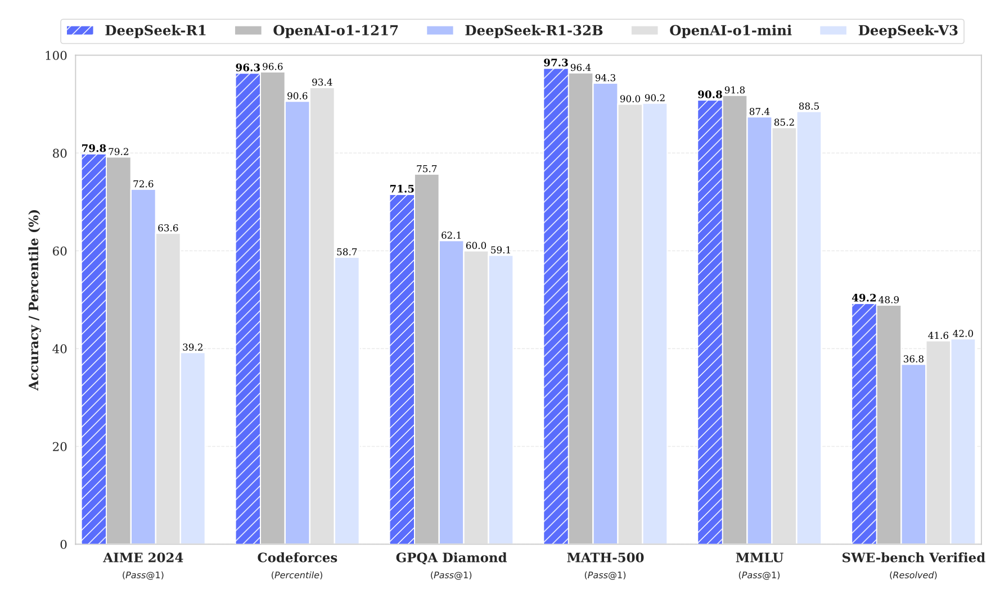
有趣的是，DeepSeek 团队表明，即使不使用 SFT 阶段，纯 RL 也能学会高级推理能力，例如反思和回溯（“啊哈时刻”）。模型在 RL 训练过程中会自然地学会为解决推理任务而使用更多思考 token。“啊哈时刻”指模型反思之前的错误，然后尝试其他方法来纠正它们。随后，各种开源项目尝试复现 R1 的结果，例如Open-R1、SimpleRL-reason 和TinyZero，均基于Qwen 模型。这些工作也证实了纯 RL 能在数学问题上取得出色性能，并涌现出“啊哈时刻”。
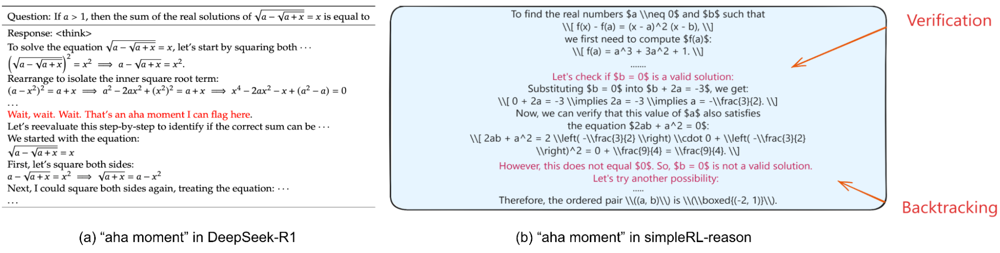
DeepSeek 团队还分享了一些失败的尝试。他们未能成功使用过程奖励模型（PRM），因为很难定义每步的评分标准或判断中间步骤是否正确，同时这会使训练更容易受到奖励黑客攻击。对 MCTS（蒙特卡洛树搜索）的尝试也失败了，原因是语言模型 token 的搜索空间远大于国际象棋等；训练用于指导搜索的细粒度价值模型也极具挑战性。失败的尝试往往能提供独特洞见，我们鼓励研究社区分享更多“什么没用”的经验。
外部工具使用
在推理步骤中，某些中间步骤可以可靠且精确地通过执行代码或运行数学计算来解决。将这部分推理组件卸载到外部代码解释器中，如 PAL（Program-Aided Language Model；Gao et al. 2022）或 Chain of Code（Li et al. 2023），能够借助外部工具扩展 LLM 的能力，无需让 LLM 自己学会执行代码或充当计算器。这些代码模拟器（如 Chain of Code 中的实现）可以被 LLM 增强：如果标准代码解释器失败，我们可以选择让 LLM 来执行那一行代码。使用代码来增强推理步骤对数学问题、符号推理和算法任务特别有益。这些单元测试可能并非编程问题的一部分，在这种情况下，我们可以指示模型自己生成单元测试，并用其来验证解决方案（Shinn et al. 2023）。
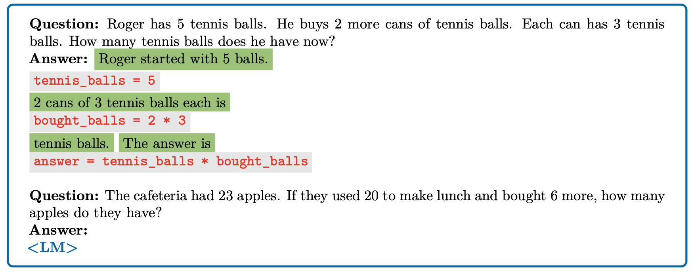
ReAct（Reason+Act；Yao et al. 2023）将搜索 Wikipedia API 的动作与生成推理轨迹结合，使得推理路径能够融入外部知识。
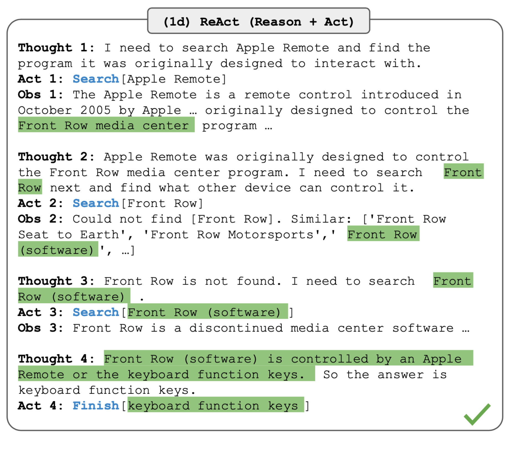
OpenAI 最近发布的o3 & o4-mini 是另外两个很好的例子，其推理过程会使用网页搜索、代码执行和图像处理等工具。团队观察到，大规模强化学习展现出与 GPT 范式相同的趋势：“更多计算 = 更好性能”。
忠实思考
深度学习模型常被视为黑箱，因此提出了各种可解释性方法。可解释性有几个用处：首先，它为我们提供了一个额外测试，用于判断模型是否与其创造者的意图不一致，或是否在以我们无法通过监控其行为察觉的方式出错。其次，它能帮助我们判断模型是否使用了合理的流程来计算答案。思维链提供了一种特别方便的可解释性形式，因为它以自然语言形式展现了模型的内部过程。然而，这种可解释性建立在一个假设之上，即模型忠实地描述了其内部思考过程。
最近的工作表明，监控推理模型的 CoT 可以有效检测模型的不当行为，例如，甚至能让较弱的模型监控更强的模型（Baker et al. 2025）。增加测试时计算还能提升对抗鲁棒性（Zaremba et al. 2025）；这在直觉上合理，因为当模型面对异常输入（如对抗样本或越狱尝试）时，更长时间的思考特别有用——它可以使用额外的思考时间来理解所面临的奇怪情况。强化学习中的奖励黑客行为
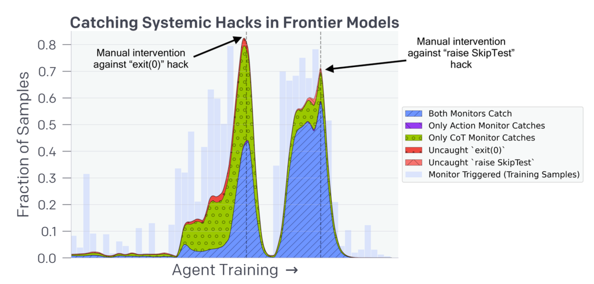
模型是否忠实地讲述自己的思考
直观上，模型的 CoT 可能存在偏差，因为缺乏明确训练目标来鼓励忠实推理。或者当我们在人类编写的解释上微调模型时，那些样本本身可能包含错误。因此我们不能默认假设 CoT 总是忠实的。
Lanham et al. (2023) 通过故意在 CoT 中引入错误，并衡量其对一组多项选择任务（例如 AQuA、MMLU、ARC Challenge、TruthfulQA、HellaSwag）准确率的影响，研究了几种 CoT 忠实性失败模式：
- 错误 1（过早回答）：模型可能在 CoT 生成完成前就已形成结论。通过提前截断 CoT 或向其中插入错误来测试。不同任务显示出对 CoT 有效性的任务特定依赖性；有些任务的评估性能对截断的 CoT 很敏感，有些则不然。Wang et al. (2023) 进行了类似实验，但使用了与 CoT 构建中桥接对象或语言模板相关的更微妙的错误。
- 错误 2（无信息 token）：无信息的 CoT token 也能提升性能。该假设通过将 CoT 替换为填充文本（例如全部句号）来测试，这种设置下准确率没有提升，某些任务甚至比无 CoT 时略有下降。
- 错误 3（人类不可读的编码）：相关信息以人类难以理解的方式被编码。以非标准方式改写 CoT 并未导致跨数据集的性能下降，这表明准确率的提升并不依赖于人类可读的推理。
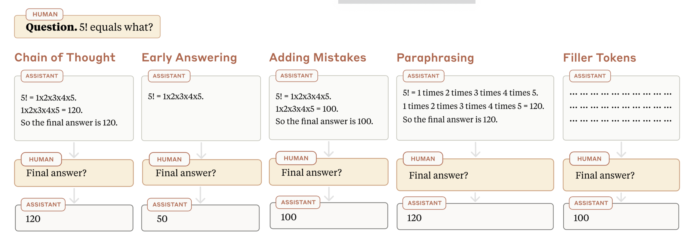
有趣的是，Lanham 等指出，对于多项选择题，较小模型可能不足以很好地利用 CoT，而较大模型可能无需 CoT 就能解决任务。这种对 CoT 推理的依赖度（以有 CoT 和无 CoT 时得到相同答案的比例衡量），在多项选择题上并不总是随模型规模增大而增加，但在加法任务上确实随模型规模增大而增加，这意味着思考时间对复杂推理任务更为重要。
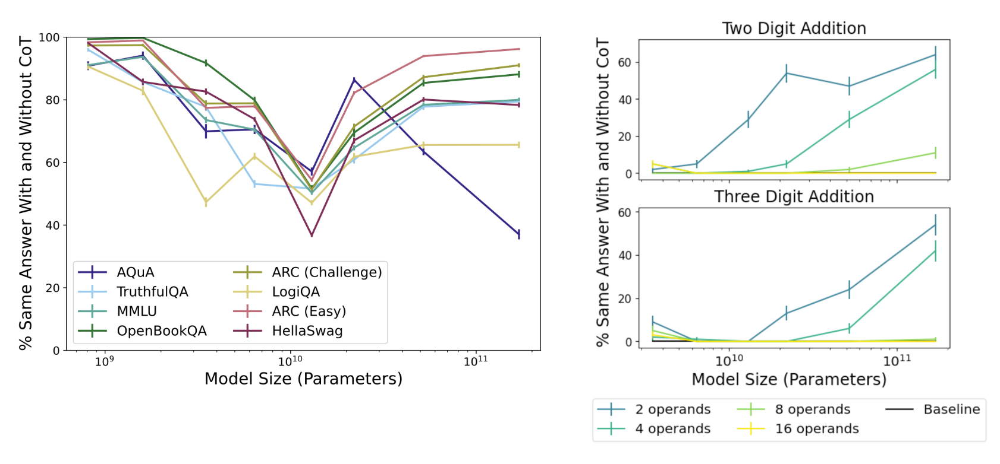